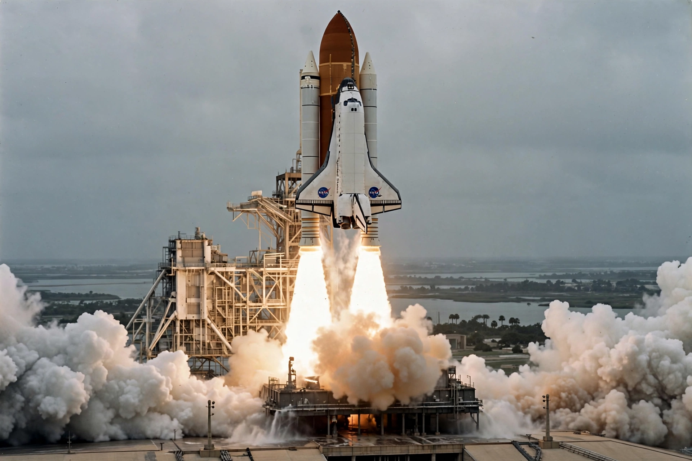

Space Shuttle program
From Wikipedia, the free encyclopedia

STS-1: the first Space Shuttle launch, 12 April 1981.The Space Shuttle program was NASA's human spaceflight programme from 1981 to 2011, flying the world's first reusable orbital spacecraft. The shuttle system consisted of a winged orbiter with three main engines, fuelled by a large external tank and boosted by two solid rocket boosters. Five orbiters — Columbia, Challenger, Discovery, Atlantis and Endeavour — flew 135 missions.
Shuttles deployed and repaired satellites, most famously servicing the Hubble Space Telescope, carried the Spacelab laboratory, docked with Mir, and assembled most of the International Space Station. The programme lost two orbiters and fourteen astronauts: Challenger broke apart 73 seconds after launch in 1986, and Columbia disintegrated during re-entry in 2003. Both accidents grounded the fleet for years and reshaped NASA's safety culture.
Retirement
The final mission, STS-135 by Atlantis, landed on 21 July 2011. The surviving orbiters went on museum display, and the United States relied on Russian Soyuz spacecraft for crew transport until SpaceX's Crew Dragon entered service in 2020.